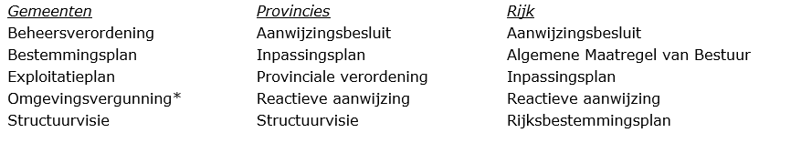
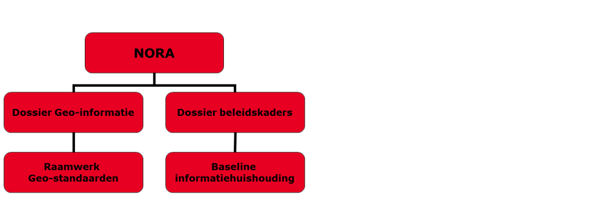
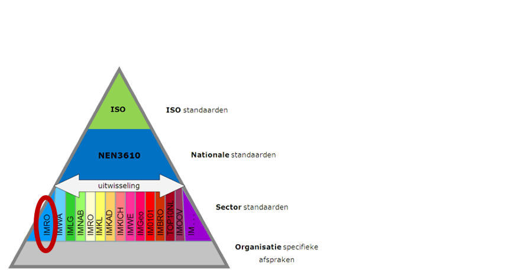

1. Inleiding
Waarom een handreiking over het archiveren van digitale ruimtelijke plannen? In
dit hoofdstuk treft u de aanleiding en wordt aangegeven wat u van deze
handreiking kunt verwachten.
1.1 Aanleiding
In de praktijk van de ruimtelijke ordening zijn de digitale ruimtelijke plannen
conform de Wet ruimtelijke ordening (Wro) de authentieke plannen. Dit betekent
dat een samenhangende set bronbestanden, dataset genoemd, conform de RO
Standaarden door gemeenten, provincies en het Rijk geproduceerd, beschikbaar
gesteld, vindbaar en toegankelijk gemaakt worden[^1]. De samenhangende set
bronbestanden is naast alle analoge en digitale stukken, zoals de ondergrond,
één van de onderdelen in de planprocedure. De bestuursorganen zijn tevens
verplicht conform de Archiefwet de ruimtelijk plannen te archiveren met als doel
de plannen in goede, geordende en toegankelijke staat te brengen en te houden.
[^1]: Gemeenten, provincies en het rijk zijn bronhouders van de ruimtelijke
plannen. Deze bestuursorganen maken de ruimtelijke plannen genoemd in artikel
1.2.1 van het Besluit ruimtelijke ordening (Bro)
In de dagelijkse praktijk is het archiveren van de analoge stukken geen
probleem. Met betrekking tot het archiveren van de samenhangende set
bronbestanden heerst echter na bijna tien jaar digitalisering nog steeds veel
onbekendheid. Daarnaast wordt soms ten onrechte verondersteld dat de landelijke
voorziening Ruimtelijkeplannen.nl een archieffunctie heeft of zou moeten hebben.
Vragen hierover worden aan Geonovum gesteld.
Het digitaal archiveren van ruimtelijke plannen was dan ook aanleiding om samen
met experts van gemeenten, provincies, het ministerie van IenM en het Nationaal
Archief nader te onderzoeken en de resultaten samen te vatten in een praktische
handreiking. De centrale vraag die daarbij wordt gesteld is “waar moet ik op
letten wanneer ik een ruimtelijk plan (bv. bestemmingsplan) archiveer c.q.
overdraag aan een archiefdienst?”.
Het doel van de handreiking is een aanzet te geven voor personen die betrokken
zijn bij het archiveren van data en zij die betrokken zijn bij de creatie en
vaststelling van het ruimtelijke plan: ruimtelijke ordenaars,
informatieverzorgers en archivarissen bij een gemeente, provincie en het rijk.
Een aanzet om het werkproces zo in te richten dat ruimtelijke plannen worden
gearchiveerd, conform de voorgeschreven wet- en regelgeving. De handreiking
richt zich op het archiveren van de samenhangende set bronbestanden. De
handreiking kan een aanvulling zijn op het bestaande informatiebeleid binnen
deze bestuursorganen. Deze handreiking kan geen aandacht geven aan het
informatiebeleid, omdat de keuze van onderwerpen en de prioritering daarin, voor
elke betrokken overheidsorganisatie anders kan zijn.
Wanneer de handreiking in de praktijk wordt gebruikt, kan blijken dat
aanscherping en/of uitbreiding van de handreiking wenselijk is. Bijvoorbeeld een
verdere uitwerking op documentniveau die nog nu nog beperkt is opgenomen.
Geonovum ontvangt graag deze informatie. U kunt ons dit laten weten via
[ro-standaarden@geonovum.nl].
1.2 Leeswijzer
In Hoofdstuk 2 komt het organiseren van het digitaal archiveren van ruimtelijke
plannen aan de orde: welke informatie moet eenmalig in de organisatie worden
vastgelegd, welke informatie meermalig. Dit hoofdstuk is de vertaling van de
hoofdstukken 3 en 4.
Om te kunnen duiden welke verantwoordelijkheden gemeenten, provincies en het
rijk hebben en mogelijk op een bepaalde manier zouden moeten uitvoeren, is de
context van wet- en regelgeving met daaruit voortvloeiende vereisten samengevat.
Deze vindt u terug in Hoofdstuk 3 en Hoofdstuk 4.
In Bijlage 2 is door middel van verschillende tabellen een lijst van elementen
opgenomen. Hierdoor is per niveau door het bestuursorgaan te bepalen welke
informatie over de samenhangende set bronbestanden van het ruimtelijk plan moet
worden verzameld om aan de slag te gaan met archiveren.
Zonder de medewerking van een aantal experts op het gebied van archiveren en
ruimtelijk ordening zou deze handreiking niet tot stand zijn gekomen. Zij worden
van harte bedankt en genoemd in Bijlage 3.
2. Handreiking: archiveren ruimtelijke plannen organiseren
In dit hoofdstuk wordt in drie stappen uiteengezet welke informatie verzameld
moet worden om ruimtelijke plannen digitaal te archiveren. De stappen worden
genomen door de bestuursorganen en betreft het vastleggen op organisatieniveau,
type plan en vervolgens het ruimtelijke plan zelf. Dit hoofdstuk is een
vertaling van de hoofdstukken 3 en 4 die de achtergrond van wet- en regelgeving
en andere belangrijke aspecten weergeven.
2.1 Algemeen
Het digitaal archiveren van de ruimtelijke plannen op grond van de Wro maakt nu
over het algemeen geen deel uit van het werkproces waarbij ruimtelijke plannen
worden gemaakt, vastgesteld en in werking treden. In wet- en regelgeving, zie
Hoofdstuk 3 en Hoofdstuk 4, is vastgelegd welke informatie tijdelijk of
permanent dient te worden bewaard, of er gebruik kan worden gemaakt van ‘zip’,
of dat archiveren alleen in bepaalde systemen is toegestaan. Zonder de
informatie uit deze hoofdstukken kan het lastig zijn dit hoofdstuk te
implementeren.
De focus van deze handreiking is erop gericht om een aanzet te geven het
werkproces zo in te richten dat ruimtelijke plannen worden gearchiveerd, conform
de voorgeschreven wet- en regelgeving. De handreiking richt zich op het
archiveren van de samenhangende set bronbestanden en de ondergrond van het
ruimtelijk plan. Daarvoor is in eerste instantie het verzamelen en borgen van
informatie nodig. Bij het digitaal archiveren van ruimtelijke plannen gaat het
om twee soorten informatie:
- documentatie tijdens het werkproces;
- de bronbestanden die samen het ruimtelijke plan vormen.
Welke bronbestanden samen het ruimtelijke plan vormen is mede bepaald door het
type ruimtelijke plan en wordt voorgeschreven vanuit de RO Standaarden
(paragraaf 3.1.2). De verschillende bestuursorganen maken gebruik van beheer
software om deze verzameling (dataset) aan te leggen en beschikbaar te stellen.
In deze handreiking gaan we dan ook niet in op de wijze van verzamelen van de
samenhangende set van bronbestanden zelf, maar richten we ons op de
documentatie: welke informatie moet er worden gedocumenteerd met betrekking tot
het archiveren en waar ontstaat deze informatie in het proces van creatie en
vaststelling van het ruimtelijke plan? De metadata, slechts een van de vele
vereisten van het archiveren, zijn hierbij het uitgangspunt. Metadata (ook wel
metagegevens genoemd) zijn gegevens die de karakteristieken van gegevens
beschrijven. Het zijn eigenlijk data over data. Voorbeelden van karakteristieken
zijn de creator, de datum van creatie, de gebruikte taal en het bestandsformaat.
Metadata beschrijven niet alleen de gegevens zelf, maar ook de context
waarbinnen de gegevens zijn ontstaan of ontvangen. En wat er vanaf het moment
van ontstaan of ontvangst met die gegevens is gebeurd.
De handreiking kan tevens worden gebruikt als leidraad bij het archiveren van de
overige digitale archiefbescheiden die in het werkproces ontstaan, zoals
zienswijzen en andere onderdelen dan de samenhangende set bronbestanden van het
ruimtelijk plan. Het gebruik van een (bepaald) archiefsysteem (paragraaf 4.5)
komt niet aan de orde, omdat dit voor iedere organisatie weer anders kan zijn.
Dit heeft echter geen invloed op de het verzamelen van de informatie die
gearchiveerd moet worden.
Om te kunnen gaan archiveren moet dit worden georganiseerd voordat feitelijk
archiefbescheiden worden aangeboden. Het organiseren van dit archiveringsproces
valt uiteen in de volgende stappen:
- inzicht krijgen in de organisatie van informatie in de organisatie;
- indelen van ruimtelijke plannen per procedure;
- vastleggen van informatie tijdens het werkproces.
De RO Standaarden maken gebruik van dossiers. Het ruimtelijke plan wordt met de
eventuele verschillende fasen vastgelegd in dat dossier en op die wijze
beschikbaar gesteld (paragraaf 3.2.1). De term dossier sluit aan op de in deze
handreiking ook aangehaalde term ‘zaak’. Het zaakgericht werken is een manier,
hulpmiddel bij het archiveren, echter geen verplichting.
Inzicht biedt organisaties duidelijkheid over:
- welke informatie binnen de organisatie aanwezig is;
- waar die informatie zich bevindt (systemen);
- wie er verantwoordelijk is voor welke informatie;
Voor het beschrijven van informatie(objecten), zoals de structuur en betekenis
daarvan, kan een informatiemodel gemaakt worden of gebruik gemaakt worden van
sectorspecifieke modellen. IMRO2012 is in dit geval een relevante
sectorstandaard. Het hebben van een informatiemodel is ook een eis uit
DUTO[^2], het normenkader
voor duurzame toegankelijkheid van overheidsinformatie. De DUTO-eisen zijn een
programma van eisen voor duurzame toegankelijkheid van de informatie in de
informatiesystemen van overheidsorganisaties. De eisen zijn generiek van aard en
weerspiegelen de eisen die gebruikers stellen aan de toegankelijkheid van de
informatie. In dit geval betreft het informatie gerelateerd aan ruimtelijke
plannen.
[^2]: Overzicht DUTO-eisen via website Nationaal archief:
Zie bijlage 1 voor de DUTO-eisen
De volgende ruimtelijke plannen worden door de verschillende bestuursorganen
gecreëerd:

- In bovenstaande lijst komt ook omgevingsvergunning voor. Hiermee wordt
kortweg aangegeven de omgevingsvergunning voor het afwijken van een
bestemmingsplan: de mededeling van een met artikel 2.12, eerste lid, onderdeel
a, onder 3 van de Wabo verleende omgevingsvergunning.
Naast deze ruimtelijke plannen is de gerechtelijke uitspraak conform de RO
Standaarden ook een type ruimtelijk plan[^3]. Wanneer bijvoorbeeld in de
procedure van het bestemmingsplan beroep volgt, heeft de uitspraak gevolgen voor
het vastgestelde plan. Dit is een nieuwe fase in de procedure en wordt bij
voorkeur als subdossier binnen het bestemmingsplan gearchiveerd. Zie paragraaf
2.4.2.
[^3]: De basis voor dit instrument is gelegd in het Bro artikel 1.2.1 lid 3 met
de daarbij behorende toelichting onderdeel L van Nota van Toelichting.
Organisaties gebruiken meerdere systemen om informatie mee vast te leggen en te
beheren. Het archiveren van digitale ruimtelijke plannen kan in een of meerdere
van die informatiesystemen. Deze systemen kunnen specifiek voor archivering
bedoeld zijn, of vakapplicaties in het primaire proces die bepaalde
archiveringsfunctionaliteit hebben (zoals functionaliteit voor vernietiging) .
Een organisatie zal daarin keuzes moeten maken, omdat het gevolgen heeft voor
werkprocessen en de inrichting van systemen. Systemen zullen, idealiter by
design,
in staat moeten zijn om informatie duurzaam toegankelijk te kunnen houden voor
zolang als nodig.
Kaders voor de inrichting van systemen worden gegeven vanuit wet- en
regelgeving, maar ook vanuit normen en standaarden. Een overzicht hiervan is in
hoofdstuk 3 te vinden.
Als duidelijk is welke informatie zich waar bevindt, is het belangrijk om te
bepalen wie verantwoordelijk is voor de creatie en het beheer van informatie
gerelateerd aan ruimtelijke plannen (de ‘actor’). De vastlegging hiervan kan
door middel van metadata. Zeker in het geval van keteninformatisering is het
belangrijk dat de betrokken organisaties hierover afspraken maken.
Informatie met betrekking tot identificatie van de eigenaar en maker van het
ruimtelijk plan wordt eenmalig in het gebruikte archiefsysteem van de
organisatie vastgelegd. In het kader van ruimtelijke plannen is onderstaande
informatie naar verwachting reeds vastgelegd en kan als eventuele controle
gebruikt worden.
De volgende metadata is of wordt verzameld:
- Zorgdrager
Het bestuursorgaan dat conform de Archiefwet de verantwoordelijkheid heeft
voor het archiveren van het ruimtelijk plan wordt aangeduid als de
zorgdrager. Dit bestuursorgaan is conform de Wro de bronhouder van het
ruimtelijk plan.
Bij de verschillende bestuursorganen zijn hiervoor aangewezen:
- Gemeente: College van Burgemeester en Wethouders[^4]
- Provincie: Gedeputeerde Staten of Provinciale Staten[^5]
[^4]: Conform artikel 3.1 van de Wet ruimtelijke ordening stelt de gemeenteraad
een ruimtelijk plan vast. Vanuit de Archiefwet is echter het college aangewezen
als zorgdrager. Verantwoordelijke voor het archiveren is daardoor niet
verantwoordelijke voor het vaststellen.
[^5]: Afhankelijk van het type ruimtelijk plan/ zaaktype is Gedeputeerde Staten,
dan wel Provinciale Staten aangewezen als zorgdrager van het ruimtelijk plan.
Rijk: Betrokken Minister(‘s)
Voor het vastleggen van en verwijzen naar institutionele informatie over
bestuursorganen kan gebruik gemaakt worden van het Actorenregister van het
Nationaal Archief. Op deze manier is een verwijzing in de metadata voldoende
en kan worden voorkomen dat deze informatie redundant bij de informatie zelf
wordt opgeslagen.
- Beheerder
De beheerder van het ruimtelijk plan wordt door het bestuur van de eigen
organisatie aangewezen. De beheerder legt bijvoorbeeld beheeractiviteiten
vast en deelt de activiteit in naar type plan en naar fase(n) van dat plan,
zie stap 2 in paragraaf [2.3.](#
Bijvoorbeeld: algemeen directeur bij een provincie of gemeente secretaris.
- Archiefvormer
De archiefvormer is de organisatie of het organisatieonderdeel dat het
ruimtelijke plan creëert. Dit kan tegelijkertijd ook de zorgdrager zijn. In
de loop der tijd kan het zorgdragerschap overgaan naar een andere
organisatie. Door het vastleggen van de archiefvormer is echter wel altijd
na te gaan wie de stukken oorspronkelijk creëerde of ontving en daar in
eerste instantie voor verantwoordelijk was.
- Mandaat
Het mandaat waaronder informatie wordt gevormd of ontvangen. In het
mandaatbesluit van het betreffende organisatieonderdeel is bepaald welk
ruimtelijk plan zij oplevert.
2.3 Stap 2: zaaktypen per procedure
Als duidelijk is welk organisatieonderdeel archiefbescheiden oplevert, wordt
informatie met betrekking tot de type ruimtelijke plannen eenmalig in de
organisatie vastgelegd. Er kan daarbij gebruik worden gemaakt van zaaktypen[^6],
of zaakomschrijvingen en deze vastleggen in de vorm van een zaaktypecatalogus.
Dit is niet verplicht en aan de betreffende overheid, dat organisatieonderdeel
te bepalen.
[^6]: KING/VNG Realisatie heeft een GEMMA zaaktypecatalogus (ZTC) ontwikkeld
voor het ontwerpen, beheren en uitwisselen van zaaktypen. Versie 2.1 is medio
2014 gepubliceerd http://www.kinggemeenten.nl/ztc/ztc-20
Welke ruimtelijke plannen conform Wro en Wabo (daarmee zaaktypen) per
bestuursorgaan worden vastgelegd, is in paragraaf 2.2 aangegeven. Er moet
daarnaast onder andere gebruik worden gemaakt worden van RO Standaarden en de
metadata standaarden uit het toepassingsprofiel (paragraaf 3.2).
Het bepalen van het type ruimtelijk plan geeft tevens inzicht in de fasen en
onderdelen: welke activiteiten vinden er plaats tijdens de procedure van het
ruimtelijk plan. Er wordt daarbij inzicht gegeven in de procedure van het
ruimtelijk plan; wanneer is een fase klaar en welke informatie is
archiefplichting. De selectielijst (paragraaf 4.2) geeft inzicht in de
bewaartermijn van het betreffende ruimtelijk plan. Een selectielijst geeft aan
hoe lang de verschillende archiefbescheiden bewaard moeten of mogen worden.
Archiefbescheiden worden soms ook informatie-objecten, documenten of records
genoemd. Het ontwerpen van een selectielijst[^7], is verplicht voor
overheidsorganisaties op basis van artikel 5 van de Archiefwet 1995. Dit artikel
blijft ook in de nieuwe archiefwet bestaan. Nieuwe selectielijsten worden door
de minister van Onderwijs, Cultuur en Wetenschap vastgesteld door middel van een
vaststellingsbesluit.
[^7]: Voor meer informatie over het opstellen van een selectielijst zie:
https://www.nationaalarchief.nl/archiveren/kennisbank/selectielijst-maken
Per type plan wordt met betrekking tot de RO Standaarden vervolgens bepaald
welke documenttypen worden gearchiveerd: bijvoorbeeld plankaart, planregels en
welke bestandsformaten.
Het is aan te bevelen om van te voren een begrippenlijst vast te leggen zodat er
geen verwarring kan ontstaan over bijvoorbeeld procedure, zaak of dossier[^8].
De meest ideale situatie is als alle bestuursorganen dezelfde begrippen zouden
hanteren. Bij het toepassen hoeven dan alleen de variabelen te worden ingevuld.
Dit is in de praktijk mogelijk nog niet haalbaar. In bijlage 1 een eerste opzet
met begrippen toegevoegd.
[^8]: Een ruimtelijk plan volgt een Wro/ Awb procedure. Bij het archiveren wordt
vaak gesproken over een zaak. De zaak is gelijk aan het dossier conform de RO
Standaarden: verzameling van samenhangende set van bronbestanden van het
betreffende ruimtelijke plan.
3. Achtergrond: wetgeving en andere kaders
De handreiking richt zich met het vorige hoofdstuk op het organiseren van het
archiveren van ruimtelijke plannen. Om duidelijk te krijgen waarom juist deze
informatie moet worden verzameld is aan de handreiking ook wetgeving toegevoegd
om de wettelijk verplichtingen en kaders te kunnen bepalen. Dit hoofdstuk richt
zich op de Wet ruimtelijke ordening en de Archiefwet.
3.1 Wetgeving
Wat betreft wetgeving hebben we primair te maken met de Wet ruimtelijke ordening
en de Archiefwet. Deze worden achtereenvolgens behandeld in deze paragraaf.
3.1.1 Wet ruimtelijke ordening
De Wet ruimtelijke ordening (Wro) is op 1 juli 2008 in werking getreden. De
basis voor digitale ruimtelijke plannen is gelegd door voor verschillende
planprocedures aan te geven dat de betrokken overheid het betreffende plan,
visie of besluit tevens langs elektronische weg bekend maakt.
De uitwerking vindt plaats in het Besluit ruimtelijke ordening (Bro) waar met
artikel 1.2.1 is bepaald welke instrumenten uit de Wro de betrokken
bestuursorganen aan eenieder elektronisch beschikbaar moeten stellen. De
betrokken bestuursorganen zijn gemeenten, provincies en het Rijk. Vervolgens
bepaalt artikel 1.2.1 Bro dat er een landelijke voorziening is, waar deze
visies, plannen en besluiten raadpleegbaar zijn. Verder is in de artikelen 1.2.3
en 1.2.4 Bro bepaald dat een ondergrond samen met de visie, het besluit of plan
digitaal wordt vastgesteld. Met de artikelen 1.2.5 en 1.2.6 Bro wordt de
ministeriële Regeling standaarden ruimtelijke ordening geïntroduceerd waarin
nadere regels zijn opgenomen betreffende de geometrische plaatsbepaling en
elektronische beschikbaarstelling, vindbaarheid en toegankelijkheid van de
ruimtelijke plannen, visies en besluiten. De Regeling standaarden ruimtelijke
ordening geeft dan ook aan welke normen, aangeduid als de RO Standaarden, in
de praktijk moeten worden gebruikt.
Naast de beschikbaarstelling is in het Bro bepaalt met artikel 1.2.3 dat de
digitale vorm van het ruimtelijke plan de authentieke versie is. De papieren
vorm van de ruimtelijke plannen is daarvan een kopie.
3.1.2 Welke ruimtelijke plannen
In de vorige paragraaf is met artikel 1.2.1 Bro aangegeven welke ruimtelijke
plannen digitaal door de bestuursorganen conform de RO Standaarden beschikbaar
worden gesteld en vindbaar en toegankelijk worden gemaakt. Deze paragraaf geeft
een concreet overzicht. Dit is inclusief de omgevingsvergunning om af te wijken
van het bestemmingsplan[^13].
[^13]: De wet- en regelgeving verplicht het bestuursorgaan om de mededeling
(kennisgeving in de Staatscourant) van een met artikel 2.12, eerste lid,
onderdeel a, onder 3 van de Wabo verleende omgevingsvergunning met behulp van de
RO Standaarden beschikbaar te stellen. In het Besluit Omgevingsrecht (Bor)
artikel 6.14 is aangegeven dat bij ministeriële regeling nadere regels worden
gesteld over de wijze waarop de mededeling elektronisch wordt gedaan en
beschikbaar gesteld. Dit betreft de ministeriële Regeling standaarden
ruimtelijke ordening 2012.
- Voorbereidingsbesluit
- Bestemmingsplan
- Inpassingsplan
- Rijksbestemmingplan
- Wijzigingsplan
- Uitwerkingsplan
- Beheersverordening
- Exploitatieplan
- Gerechtelijke uitspraak
- Omgevingsvergunning om af te wijken van het bestemmingsplan
- Aanwijzingsbesluit
- Reactieve aanwijzing
- Gemeentelijke structuurvisie
- Provinciale structuurvisie
- Rijksstructuurvisie
- Provinciale verordening
- Algemene Maatregel van Bestuur
Daar waar gesproken wordt in deze handreiking over ruimtelijke plannen, worden
feitelijk bovenstaande plannen, visies en besluiten bedoeld. Digitaal geeft aan:
conform de RO Standaarden.
3.1.3 Archiefwet
Nederlandse overheidsorganen vallen onder de Archiefwet 1995. Specifieke
bepalingen uit de Archiefwet zijn uitgewerkt in het Archiefbesluit. En
gedetailleerde regels voor de informatiehuishouding en de archieven van de
overheid zijn geformuleerd in de Archiefregeling. Ieder overheidsorgaan moet
nadere regels vaststellen voor de organisatie van het archiefbeheer,
bijvoorbeeld in een Archiefverordening (specificatie van de wijze waarop de
zorgplicht zal worden uitgevoerd) en een besluit Informatiebeheer (specificatie
van de wijze waarop de beheerplicht zal worden uitgevoerd).
De Archiefwet en de regels die daaruit voortvloeien hebben betrekking op zowel
informatie die permanent bewaard moet blijven als informatie die op termijn
vernietigd wordt. De wet- en regelgeving op het gebied van archieven heeft als
belangrijkste doel de duurzaamheid, authenticiteit, betrouwbaarheid,
bruikbaarheid en integriteit van overheidsinformatie te borgen. Een belangrijk
basisconcept daarbij is dat vorm, inhoud en structuur van archiefbescheiden
behouden moeten blijven of tenminste reproduceerbaar zijn.
3.2 Normen en standaarden
3.2.1 Digitale ruimtelijke ordening
In het kader van de Wro zijn de RO Standaarden bepalend voor het uitwisselbaar,
beschikbaar, vindbaar en toegankelijk maken van de ruimtelijke plannen. De
Regeling standaarden ruimtelijke ordening 2012 geeft de volgende normen aan:
- IMRO: Informatie Model Ruimtelijke Ordening
De plankaart wordt in GML formaat conform het Informatie Model Ruimtelijke
Ordening opgeleverd. In deze GML is naast inhoudelijke planinformatie, ook
informatie over het plan opgenomen zoals gegevens over het bestuursorgaan en
status van het plan en de relatie naar de ondergrond die bij het plan wordt
vastgesteld. Deze ondergrond is geen onderdeel van de dataset maar moet wel
bewaard worden door het betreffende bestuursorgaan. Raad van State
bijvoorbeeld wil naast het plan zelf van een bepaald moment ook over de
daarbij vastgestelde ondergrond kunnen beschikken[^14].
[^14]: Conform artikel 1.2.4 Bro moet bij het besluit tot vaststelling van het
ruimtelijk plan worden aangegeven welke ondergrond is gebruikt.
- STRI: Standaard Toegankelijkheid Ruimtelijke Instrumenten
Bij het beschikbaar en toegankelijk maken van ruimtelijke plannen moet de
Standaard Toegankelijkheid Ruimtelijke Instrumenten verplicht worden
toegepast. In de STRI worden eisen gesteld aan de bestandsextensies,
formaten, bestandsnamen, te gebruiken identificatienummer, het digitaal
waarmerken (zie paragraaf 0) en de beschikbaarstelling zelf.
- SVBP: Standaard Vergelijkbare Bestemmingsplannen
In de Standaard Vergelijkbare Bestemmingsplannen is voor bestemmingsplannen,
inpassingsplannen, rijksbestemmingsplannen, wijzigings- en
uitwerkingsplannen aangegeven hoe deze van een verbeelding (weergave) in een
viewer (software) moeten worden voorzien. Voor andere ruimtelijke plannen
dan deze plannen geldt dat zij conform de Wro vormvrij zijn: geen
verbeeldingsafspraken.
- IMROPT: Informatie Model Ruimtelijke Ordening Planteksten
De standaard voor planteksten moet door de bestuursorganen onder voorwaarde
verplicht worden gebruikt. Toepassing van IMROPT2012 is verplicht wanneer
het bestuursorgaan ervoor kiest de planteksten in objectgerichte vorm (XML)
beschikbaar te stellen. Het bestuursorgaan mag er ook voor kiezen de
planteksten in de vorm van HTML en PDF bestanden beschikbaar te stellen.
IMROPT is in dit geval dan niet van toepassing.
In deze standaarden is bepaald dat ieder ruimtelijk plan, visie of besluit is
opgebouwd uit een samenhangende set bronbestanden (dataset genoemd). Voor
verschillende typen instrumenten is dit een andere set[^15]. De dataset omvat de
verschillende onderdelen van het ruimtelijk plan:
[^15]: Welke planonderdelen bij welk instrument van toepassing zijn, is
aangegeven in hoofdstuk 2 van de STRI2012
- Plankaart;
- Regels;
- Toelichting;
- Bijlage bij regels;
- Bijlage bij toelichting;
- Besluitdocument;
- Beleidsdocument;
- Geleideformulier.
Tot slot maken ook de praktijkrichtlijnen onderdeel uit van de RO Standaarden.
De praktijkrichtlijnen geven toelichting op de normen IMRO, STRI, SVBP en IMROPT
door voor de gebruiker van de standaard per type ruimtelijk plan aan te geven
hoe het ruimtelijk plan moet en kan worden gemaakt volgens de standaard.
3.2.2 Archivering
Vanuit het oogpunt van archivering is, naast de Archiefwet- en regelgeving, een
aantal normen en standaarden te benoemen die de duurzame toegankelijkheid van
informatie ondersteunen:
- DUTO: Normenkader met
eisen voor duurzame toegankelijkheid van overheidsinformatie in
informatiesystemen, mede op basis van wet- en regelgeving en standaarden.
- NEN-ISO 30301: Management systeem standaard voor het beheer van
archiefbescheiden, dat beschreven wordt in NEN-ISO 15489.
- NEN-ISO 15489-1: standaard voor archief- en informatiemanagement. De
Archiefregeling schrijft in artikel 16 voor, dat een organisatie ervoor
zorgt, dat het beheer van de archiefbescheiden moet voldoen aan toetsbare
eisen van een kwaliteitssysteem. De NEN-ISO 15489 wordt daarbij genoemd als
voorbeeld van een kwaliteitssysteem, dat specifiek gericht is op de
kwaliteit van het archief- en informatiebeheer.
- NEN-ISO 23081: metadata voor archiefbescheiden. De creatie van een
metadataschema zoals bedoeld in deze standaard wordt ook voorgeschreven in
de Archiefregeling.
- NEN-ISO 14721: standaard voor de functionaliteit van een e-depot.
- NEN-ISO 16175: internationale standaard voor functionaliteiten van
programmatuur voor archiefmanagement. Deze is onlangs geadopteerd door NEN,
vervangt in principe NEN 2082 (zie onder) en is actueler dan Moreq2010.
- OWMS: de Overheid.nl Web Metadata Standaard (OWMS) is de metadata
standaard voor informatie van de Nederlandse overheid op internet.
- NEN-ISO 27000: Management systeem standaard voor informatiebeveiliging,
in Nederland uitgewerkt in de Baseline Informatiebeveiliging Overheid (BIO).
- ISO 19165-1:2018 Geographic information -- Preservation of digital
data and metadata -- Part 1: Fundamentals
- ISO 19115-1:2014 Geographic information -- Metadata -- Part 1:
Fundamentals
- Inspire richtlijnen
- eArchiving Building Block, specificaties van een op OAIS
gebaseerde archiveringsmethode die door de Europese commissie wordt gefinancierd.
- Common Specification for Geospatial data, onderdeel van eArching building block, zie link
3.3 Andere kaders
Naast wetgeving en standaarden zijn er een aantal andere kaders die een rol
spelen bij ruimtelijke plannen. Een belangrijk kader is de Nederlandse Overheid
Referentie Architectuur (NORA).
NORA bevat principes, beschrijvingen, modellen en standaarden voor het ontwerp
en de inrichting van de elektronische overheid. Het centrale begrip is
“interoperabiliteit”: het vermogen van organisaties en mensen om informatie uit
te wisselen en die informatie te begrijpen en te gebruiken[^21]. Uit NORA
vloeien, naast andere dossiers, zowel het dossier Geo-informatie als het dossier
voor beleidskaders voort, zie Figuur 1.
[^21]: NORA kent meerdere ‘dochters’, zoals GEMMA voor gemeenten, PETRA voor
provincies, EAR voor het Rijk en WILMA voor waterschappen.
Figuur 1 NORA en de relatie met geo-informatie

Het dossier Geo-informatie brengt ons waar de Wro ook naar toe leidt: het
raamwerk voor standaarden op het gebied van ruimtelijke ordening, zie Figuur 2.
Op hetzelfde niveau als dat raamwerk voor geo-standaarden past de Baseline
Informatiehuishouding binnen het dossier Beleidskaders. Voor zowel het rijk als
gemeenten is er inmiddels een specifieke Baseline vastgesteld. Deze Baseline is
het normenkader waarmee de informatiehuishouding van de overheid ingericht
wordt. Daarbij is rekening gehouden met onder meer de eisen uit de Archiefwet en
de standaarden voor archief- en informatiehuishouding die hierna zullen worden
toegelicht.
Figuur 2 Basismodel voor geo-informatie met sectorale standaard voor de
ruimtelijke ordening

3.4 Digitaal waarmerken
In de RO Standaarden is bepaald dat het ruimtelijk plan van een digitaal
waarmerk moet worden voorzien. De dataset van het ruimtelijk plan wordt met
behulp van een PKI-Overheid certificaat van een waarmerk voorzien. Op deze wijze
wordt de authenticiteit van het plan gewaarborgd[^22]. Pas wanneer dit waarmerk
aan het plan is toegevoegd, is dit het digitale authentieke plan conform de RO
Standaarden dat beschikbaar, toegankelijk en vindbaar moet zijn.
[^22]: Dit wordt voorgeschreven vanuit de RO Standaarden, onderdeel Standaard
Toegankelijkheid Ruimtelijke Instrumenten, zie hoofdstuk 6 van de
STRI2012.
Artikel 24 van de Archiefregeling schrijft voor dat, wanneer er gebruik is
gemaakt van een digitale waarmerk of handtekening[^23] in de metagegevens wordt
vastgelegd wie de houder is van de digitale handtekening, wanneer de
handtekening is gevalideerd en wat daar het resultaat van was, welke
functionaris verantwoordelijk was voor de validatie en de identificatie van het
certificaat van de digitale handtekening. De handtekening zelf hoeft volgens de
Archiefwet niet permanent bewaard te worden. Dit is bij het gebruik van het
PKI-Overheid certificaat voor het waarmerken van de digitale ruimtelijke plannen
al geregeld.
[^23]: Zie Wet elektronische handtekening
3.5 Samenvatting wet- en regelgeving met bijbehorende standaarden
4. Achtergrond: belangrijke aspecten bij het archiveren
Nu de kaders van wet- en regelgeving zijn gegeven, wordt in dit hoofdstuk een
aantal randvoordwaarden op rij gezet. Randvoorwaarden die voortvloeien uit deze
kaders. We richten ons daarbij met name op de digitale aspecten van het
archiveren. Achtereenvolgens komen metadata, bewaartermijnen, toegestane
compressie en formaten en het bewaren van software aan de orde.
Metadata zijn gegevens die de context, inhoud en structuur van archiefbescheiden
(records) beschrijven, evenals het beheer van die records door de tijd heen. Ze
zijn niet alleen onmisbaar om de terugvindbaarheid, bruikbaarheid,
authenticiteit, integriteit en betrouwbaarheid van de records te garanderen en
het beheer ervan op lange termijn mogelijk te maken, maar ook zijn ze van
essentieel belang voor interoperabiliteit. Om het uitwisselen van records tussen
systemen mogelijk te maken, moeten afspraken gemaakt worden over de manier
waarop dat gebeurt, in welke ‘taal’ deze systemen met elkaar spreken en hoe
metagegevens en records geïnterpreteerd moeten worden. Uitwisseling tussen
systemen is zowel aan de orde binnen de bestuursorganen als tussen de
verschillende organisaties[^34]. Als het gaat om metagegevens zijn zulke
afspraken vastgelegd in onder andere metagegevensschema’s. In een digitale
wereld zijn metadata zo mogelijk nog belangrijker dan vroeger. Dat is ook de
reden dat metadata worden gezien als onlosmakelijk onderdeel van de
archiefbescheiden zelf[^35].
[^34]: Jorien Weterings, MeDuSa. XML-schema voor het e-Depot, Od #7/8 2012,
pp. 26-28.
Figuur 3 Basismodel voor metagegevens van NEN ISO 23081[^36]
[^36]: Afkomstig uit SPIRT project: Sue McKemmish, Glenda Acland and Barbara
Reed, Towards a Framework for Standardising Recordkeeping Metagegevens: The
Australian Recordkeeping Metagegevens Schema
Ook in NEN-ISO 23081-1:2017 Metagegevens voor records - Principes (paragraaf
9.1).

4.1.1 Standaard
De NEN-ISO 19115 metadata standaard voor geo-informatie is bij de meeste
overheden die met ruimtelijke plannen werken vermoedelijk wel bekend vanwege het
toepassingsprofiel voor geo-informatie in Nederland. De Europese
richtlichtlijn INSPIRE verplicht het gebruik van het toepassingsprofiel.
Er bestaat daarnaast een andere metadata standaard, de NEN-ISO 23081, die
specifiek betrekking heeft op metadata voor archiefbescheiden. Deze standaard
wordt ook genoemd in de Archiefregeling. Samengevat zegt de Archiefregeling het
volgende over metagegevens[^39]:
[^39]: De artikelen 17, 19, 20 en 24 van de Archiefregeling gaan specifiek over
metagegevens.
Maak een metagegevensschema zoals bedoeld in NEN-ISO 23081;
Leg metagegevens vast over:
- inhoud, vorm en structuur van de archiefbescheiden
- de context waarbinnen de archiefbescheiden zijn gevormd (binnen welkproces,
door welke actor)
- relatie met andere archiefbescheiden
- beheersactiviteiten die op de archiefbescheiden zijn uitgevoerd (denk aan
conversie, migratie, selectie, openbaarmaking etc.)
- software die gebruikt wordt om archiefbescheiden te beheren;
Zorg dat de koppeling tussen metagegevens en archiefbescheiden behouden
blijft. Dat betekent bijvoorbeeld dat er voorzieningen getroffen moeten
worden om die koppeling in stand te houden als de archiefbescheiden
verplaatst worden vanuit het ene naar het andere systeem.
4.1.3 Software
In de metadata moet ook worden vastgelegd met welke applicatie de informatie is
gecreëerd, inclusief versienummer. Ook als er een nieuwe versie wordt
geïnstalleerd, moet dit worden vastgelegd. Dit is een voorbeeld van
‘event-history’ zoals in NEN-ISO 23081 en de Richtlijn/toepassingsprofiel verder
wordt toegelicht.
Doordat de ruimtelijke plannen worden gemaakt met open standaarden[^41] is er
tot op heden geen aanleiding voor het bewaren van software. Er wordt uitgegaan
van het principe dat software (viewers) om de plannen weer te geven deze open
standaard moet kunnen lezen. Om de ruimtelijke plannen vanuit het archief direct
te kunnen raadplegen is het echter wel van belang dat de zorgdrager over
geschikte software beschikt.
[^41]: De RO Standaarden zijn wettelijke open standaarden. Meer informatie via
http://www.forumstandaardisatie.nl/
4.2 Bewaartermijnen
De Archiefwet schrijft voor dat ieder overheidsorgaan moet beschikken over een
selectielijst, die door de minister wordt vastgesteld. In de selectielijsten is
bepaald of, en zo ja wanneer, archiefbescheiden vernietigd moeten worden. De
VNG (bij mandaat van alle gemeenten), het IPO (bij mandaat van de
provincies) en het Rijk[^44] hebben ieder aparte selectielijsten opgesteld.
[^44] Zie BSD 120: http://www.handelingenbank.info/ib.php
Wanneer archiefbescheiden voor bewaring worden aangemerkt, moeten ze na maximaal
20 jaar[^45] (korter mag ook, langer niet -uitzonderingen daargelaten-) worden
overgebracht naar de archiefbewaarplaats die door de zorgdrager is aangewezen.
Voor de rijksoverheid bevindt die bewaarplaats zich bij het Nationaal Archief.
Gemeenten en provincies kunnen eigen archiefbewaarplaatsen hebben. Zij kunnen
ook daarin samenwerken, zoals bijvoorbeeld Regionale Archiefdiensten. Zolang de
plannen nog niet zijn overgebracht naar een archiefbewaarplaats is de beheerder
die is aangewezen door het bestuur, verantwoordelijk voor het in goede,
geordende en toegankelijke staat te houden van de archiefbescheiden.
[^45]: Het ministerie van OCW is voornemens om de overbrengingstermijn in de
nieuwe Archiefwet terug te brengen naar 10 jaar.
Op dit moment wordt er gewerkt aan een nieuwe archiefwet, deze zal naar
verwachting behalve vernietiging en overbrenging naar een archiefbewaarplaats
(van te bewaren materiaal) ook nog een derde keuze bieden. Namelijk “bewaren bij
de bron”, hiermee wordt het onder strenge vooraarden mogelijk dat een
archiefvormer/ zorgdrager zelf als archiefbewaarplaats wordt aangewezen. Dit is
van belang voor organisaties die veel eigen dossiers voor langere tijd willen
hergebruiken. Denk hier bij o.a aan het Kadaster. Bewaren bij de bron heeft geen
invloed op de bewaartermijnen zelf maar wel op de locatie en de manier van
opslag van archiefmateriaal.
Ook voor ruimtelijke plannen is bepaald of ze voor bewaring of vernietiging op
termijn in aanmerking komen. Uit de desbetreffende selectielijsten blijkt dat
deze plannen doorgaans voor permanente bewaring worden bestemd. Vaak is daarbij
gespecificeerd dat het de vastgestelde versie van het plan betreft.
Voorbereidende stukken moeten op termijn vernietigd worden (de
vernietigingstermijnen variëren tussen de 5 en 20 jaar). De bepalingen in de
selectielijsten gelden voor alle archiefbescheiden ongeacht de vorm.
Digitale ruimtelijke plannen vormen daarop geen uitzondering.
Het kan zijn dat per selectielijst de bewaarplicht van de verschillende
documenten, en stadia van documenten, verschillend is vastgesteld. Hieronder
volgt een korte opsomming.
4.2.1 Gemeenten
De stukken die behoren bij de voorbereiding van het ruimtelijke plan, visie of
besluit worden 20 jaar bewaard. Blijvend bewaard worden de stukken van het
ruimtelijk plan, visie of besluit dat door de gemeente is vastgesteld. Na 20
jaar brengt de zorgdrager (de gemeente) de archiefbescheiden over naar de
archiefbewaarplaats in het eigen archief, streekarchief of Nationaal Archief.
4.2.2 Provincies
Ruimtelijke plannen (zoals structuurvisies), ‘met inbegrip van voorstadia die om
inhoudelijke of procedurele redenen belangrijke wijzigingen van de tekst
bevatten’, worden gewaardeerd met bewaren. De waardering (bewaartermijn) van
overige conceptversies is niet specifiek geregeld. In de geactualiseerde
selectielijst, geldig voor provinciale archieven vanaf 2013, is
gespecificeerd dat bepaalde onderdelen (voorontwerpen, overleg, zienswijzen) na
10 jaar vernietigd moeten worden. Blijvend bewaard worden de stukken van het
ruimtelijk plan, visie of besluit dat door de provincie is vastgesteld. Na 20
jaar brengt de provincie de archiefbescheiden over naar de archiefbewaarplaats
in het eigen archief, streekarchief of Nationaal Archief
4.2.3 Het rijk
Voor de rijksoverheid zijn per beleidsterrein voor de verschillende
archiefvormers (departementen, uitvoeringsorganisaties etc.) selectielijsten
vastgesteld. Ruimtelijke plannen vallen onder het beleidsterrein Ruimtelijke
ordening en geo-informatie. Selectielijsten zijn verzameld in het bijbehorende
‘Basisselectiedocument’ (BSD 120).
Kaarten zijn als onderdeel van het vaststellen en evalueren van beleid
betreffende ruimtelijke ordening gewaardeerd met bewaren (handeling 1, actor
minister belast met ruimtelijke ordening). Hier is niet expliciet een
onderscheid gemaakt tussen het bewaren van eindproducten en het na enige tijd
vernietigen van voorbereidende stukken.
De handelingen gelden ook voor onder het zorgdragerschap van de minister
vallende diensten, als daar geen aparte waardering voor is vastgesteld. Niet
expliciet genoemde archiefvormers die niet onder de minister belast met
ruimtelijke ordening vallen maar onder Economische Zaken, zoals de Dienst
Landelijk Gebied, kunnen gebruikmaken van handeling ‘Het bijdragen aan de
totstandkoming van nota's, programma's, plannen en maatregelen betreffende de
ruimtelijke ordening op provinciaal of regionaal niveau’[^47].
[^47]: Uit het BSD Landinrichting, minister LNV, waardering Bewaren BSD 59: zie
http://www.handelingenbank.info/ib.php
4.4 Vervanging
Vervanging betekent dat archiefbescheiden worden vervangen door reproducties. De
originele bescheiden worden vervolgens vernietigd. De reproducties nemen dus
volledig de plaats in van de oorspronkelijke bescheiden. De nieuwe
informatiedragers moeten dan voldoen aan de eisen die worden gesteld in de
Archiefregeling.. Van de ruimtelijke plannen conform het Bro is de digitale
versie de authentieke versie. Bij vaststelling van het ruimtelijk plan wordt
tevens een papieren versie gemaakt. Vervanging is in dat geval geen optie, de
papieren zijn in dit geval een kopie en mogen gewoon vernietigd of verwijderd
worden. Echter, een overheid kan, zeker van particulieren, nog plannen of
reacties daarop in papieren vorm ontvangen en wensen deze digitaal toe te voegen
aan de overige bescheiden. Dan is vervanging een logische actie.
Organisaties die onder de werking van de Archiefwet 1995 vallen, mogen
vervanging toepassen, mits dat gebeurt met juiste en volledige weergave van de
in de bescheiden voorkomende gegevens (artikel 6, eerste lid van het
Archiefbesluit 1995). Gaat het om archiefbescheiden die ingevolge een
vastgestelde selectielijst niet voor vernietiging (op termijn) in aanmerking
komen, dan is artikel 26b van de Archiefregeling van toepassing.
Dit betekent dat de overheid die gaat vervangen, inzicht kan geven in een aantal
elementen van vervanging, waaronder de reikwijdte, de technische instellingen,
de gebruikte hard- en software en de kwaliteitsprocedures. Op grond van artikel
26b moet een zorgdrager deze elementen in het besluit tot vervanging van te
bewaren archiefbescheiden opnemen. In de praktijk gebeurt dit door het opstellen
van een handboek vervanging. Het Nationaal Archief biedt, hoewel zij geen
formele rol heeft bij het opstellen van een vervangingsbesluit, organisaties een
handvat in de vorm van de ‘Handreiking vervanging
archiefbescheiden’.
4.5 Archiefsysteem
In dit hoofdstuk zijn de belangrijkste voorwaarden aangegeven die een zorgdrager
moet organiseren voor het archiveren van digitale ruimtelijke plannen.
Het archiefsysteem waar de samenhangende set bronbestanden worden opgeslagen,
wordt door de zorgdrager onder andere geselecteerd op basis van deze voorwaarden
en de voorzieningen die binnen de organisatie aanwezig zijn. Zo kan het
aanwezige systeem voor de BAG, GBA, het e-depot of RO beheersysteem mogelijk
geschikt zijn. De zorgdrager is niet verplicht vanuit de wet- en regelgeving
voor archiveren te kiezen voor een bepaalde applicatie of database. De
zorgdrager kiest het systeem naar aanleiding van de eerder geschetste
randvoorwaarden (zoals de DUTO eisen, zie bijlage 1)en richt het systeem en de
organisatie op basis van die eisen daarvan in.
7. Bijlage 3: De Pen
De pen van deze handreiking is gevoerd door Geonovum. Dit kon echter niet zonder
de medewerking en inzet van een aantal experts op het gebied van ruimtelijk
ordening en archiveren. We bedanken hen die tijd en moeite hebben gestoken in
inhoudelijke bijdrage, bijwonen van discussies, mede schrijven of het anderszins
tot stand laten komen van deze handreiking.
Versie 1:
Anja Meertens – provincie Limburg
Dirk de Klerk - ministerie van Infrastructuur en Milieu
Ellie Schetters – provincie Gelderland
Florence van Limburg – Nationaal Archief (hoofdstuk 4)
Frans Smit – gemeente Almere (hoofdstuk 2)
Hans Seinen – provincie Zuid-Holland (hoofdstuk 3 en 4)
Harold Dello – provincie Limburg (hoofdstuk 3 en 4)
Heidi Deijkers – ministerie van Infrastructuur en Milieu (hoofdstuk 2)
Jorien Weterings – Nationaal Archief (hoofdstuk 3 en 4)
Koos Ju – IPO (hoofdstuk 3 en 4)
Nelleke Radder – provincie Zuid-Holland
Ruth van Belkum - ministerie van Infrastructuur en Milieu (hoofdstuk 3 en 4)
Peter Diebels – provincie Zuid-Holland
Silvie Pluim – gemeente Almere (hoofdstuk 2)
Versie 2:
Wout van der Reijden – Nationaal Archief
Tom Derks – Nationaal Archief